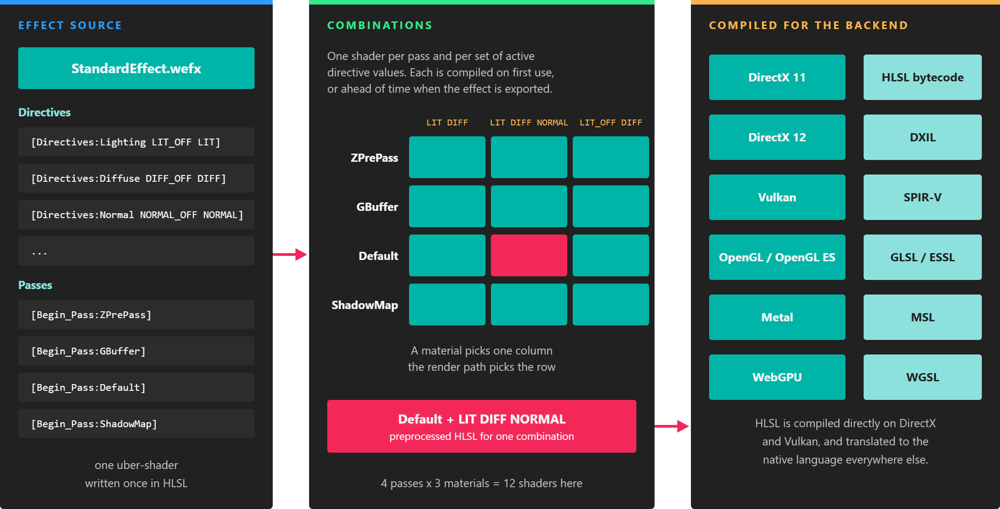

Effect Metatags
Effects are written in HLSL, extended with metatags: keywords in square brackets that the effect analyzer reads and removes before the code reaches the shader compiler. Metatags split the file into blocks, declare the directives that turn it into many shaders, fill constant buffer fields and textures with engine data, and configure how each pass is compiled and rendered.
This page is the reference for every metatag. For a walkthrough of a complete effect, see Create Effects.
Note
Block, directive and pass setting tags are matched without regard to case. Parameter and texture semantics such as [WorldViewProjection] or [FrameBuffer] are case-sensitive and must be written exactly as listed.
Blocks
An effect file is divided into blocks:
| Block | Tags | Description |
|---|---|---|
| Resource layout | [Begin_ResourceLayout] ... [End_ResourceLayout] |
Declares the resources every pass can use: constant buffers, structured buffers, textures, samplers and unordered access resources, plus the effect's directives. |
| Pass | [Begin_Pass:PassName] ... [End_Pass] |
One shader program. The render path decides when each pass name runs; see Pass names. |
| Library | [Begin_Library] ... [End_Library] |
The body of a library effect: constants, structures, directives and functions that other effects include. A library effect has only this block, with no resource layout or passes. |
| Global | (none) | Code outside every block. It is placed at the start of every pass, ahead of included libraries, which makes it the place for defines that configure a library. |
Pass names
The default render pipeline runs these passes. An effect only needs to define the ones it uses; every graphics effect needs Default.
| Pass | Run by | Purpose |
|---|---|---|
ZPrePass |
ForwardRenderPath |
Fills the depth buffer before shading so that the Default pass shades each pixel once. Only materials whose render layer tests and writes depth are drawn in it. |
GBuffer |
ForwardRenderPath |
Writes normals, roughness and metallic to the first target, motion vectors to the second and distortion to the third. Post-processing effects such as SSAO, SSR, TAA and motion blur read them. |
Default |
ForwardRenderPath |
The main shading pass. Post-processing also runs at the end of it. |
ShadowMap |
ShadowRenderPath |
Renders depth from a light to build its shadow map. |
A custom render path can run passes with any other names. See Rendering Overview.
Include a library
To use a library effect, include it at the top of a graphics or compute effect:
[Include_Library LibraryName LibraryId]
- LibraryName: a readable name for the library.
- LibraryId: the GUID of the library effect asset.
Referencing the library by id means you can move the asset between folders without breaking the effects that include it.
[Include_Library Common 7efb1394-cf61-4617-8dad-8dc5c7d46164]
Directives
Directives turn one effect into a family of shaders. Declare them inside the resource layout block (or the library block of a library effect):
[Directives:Name VALUE_OFF VALUE]
[Directives:Name VALUE_A VALUE_B VALUE_C ...]
The name identifies the directive in the Material Editor and in generated decorators. The values are preprocessor symbols; exactly one of them is defined in each compiled shader. By convention, the first value of an on/off directive ends in _OFF and is the default.
[Directives:Normal NORMAL_OFF NORMAL]
[Directives:ShadowFilter SHADOW_FILTER_OFF SHADOWFILTER3 SHADOWFILTER5 SHADOWFILTER7]
The shader code tests the values with the usual preprocessor directives:
#if NORMAL
float3 normal = NormalTexture.Sample(NormalSampler, input.TexCoord).xyz * 2.0 - 1.0;
#else
float3 normal = input.Normal;
#endif
#if DIFF || EMIS
output.TexCoord = input.TexCoord;
#endif
Every directive multiplies the number of combinations. Two directives with two and three values give six combinations per pass:
B_OFF |
C |
D |
|
|---|---|---|---|
A_OFF |
A_OFF B_OFF |
A_OFF C |
A_OFF D |
A |
A B_OFF |
A C |
A D |

One effect, many shaders: each material activates one value per directive, each pass is compiled for that combination, and the HLSL is translated to the language of the backend in use.
Combinations can be compiled on demand at runtime, or precompiled when the effect is exported so that nothing is compiled on the device. Using Effects explains how to choose.
Directives set by the engine
Some directives are defined by the render pipeline rather than by the material. Declare them in your effect only if your code needs to react to them:
| Directive value | When it is defined |
|---|---|
LIT |
Set by the material. The forward render path only assigns lights to objects whose material has LIT active. |
SHADOW_SUPPORTED |
The device supports shadow maps. |
SHADOW_FILTER_OFF, SHADOWFILTER3, SHADOWFILTER5, SHADOWFILTER7 |
The PCF filter chosen in the ShadowMapManager: 2x2, 3x3, 5x5 or 7x7. |
POINT_LIGHT, SPOT_LIGHT, AREA_LIGHT |
The scene contains at least one light of that kind. |
LOW_PROFILE |
The application runs in low profile mode. |
MULTIVIEW_RTI, MULTIVIEW_VI |
The camera renders several views at once (stereo), using render target index or view index. |
GAMMA_COLORSPACE |
The shader must encode gamma itself because it renders straight to a non-sRGB swap chain. |
DEBUG |
The application runs inside Evergine Studio. |
Resource tags
Default values
[Default(value)] after a constant buffer field gives it an initial value. Materials created from the effect start with it.
cbuffer Parameters : register(b1)
{
float SpeedFactor : packoffset(c0.x); [Default(1.5)]
float3 Position : packoffset(c0.y); [Default(2.3, 3.3, 5.6)]
};
Supported types are int, float, bool, float2, float3 and float4. Values use a dot as decimal separator.
Engine parameters
A semantic tag after a constant buffer field makes the engine fill it for you:
cbuffer PerDrawCall : register(b0)
{
float4x4 WorldViewProj : packoffset(c0); [WorldViewProjection]
};
Each tag has an update policy: how often the engine rewrites the value. A constant buffer is updated as often as its most frequently changing field requires, so group per-draw values in one buffer and per-frame values in another.
| Policy | Rewritten |
|---|---|
PerFrame |
Once per frame. |
PerView |
Once per camera, shadow cascade or cube face. |
PerDrawCall |
For every draw call. |
Transforms
| Tag | HLSL type | Policy | Value |
|---|---|---|---|
[World] |
float4x4 |
PerDrawCall | World matrix of the object. |
[PreWorld] |
float4x4 |
PerDrawCall | World matrix of the object in the previous frame, for motion vectors. |
[WorldInverse] |
float4x4 |
PerDrawCall | Inverse of the world matrix. |
[WorldInverseTranspose] |
float4x4 |
PerDrawCall | Inverse transpose of the world matrix, to transform normals. |
[WorldViewProjection] |
float4x4 |
PerDrawCall | World, view and projection combined. |
[WorldViewProjectionInverse] |
float4x4 |
PerDrawCall | Inverse of the above. |
[UnjitteredWorldViewProjection] |
float4x4 |
PerDrawCall | World-view-projection without the TAA jitter. |
[View] |
float4x4 |
PerView | View matrix of the camera. |
[ViewInverse] |
float4x4 |
PerView | Inverse view matrix: the camera's world transform. |
[Projection] |
float4x4 |
PerView | Projection matrix, including the TAA jitter when TAA is on. |
[UnjitteredProjection] |
float4x4 |
PerView | Projection without the TAA jitter. |
[ProjectionInverse] |
float4x4 |
PerView | Inverse projection. |
[ViewProjection] |
float4x4 |
PerView | View and projection combined. |
[UnjitteredViewProjection] |
float4x4 |
PerView | View-projection without the TAA jitter. |
[ViewProjectionInverse] |
float4x4 |
PerView | Inverse view-projection, to reconstruct positions from depth. |
[PreviousViewProjection] |
float4x4 |
PerView | View-projection of the previous frame. |
Camera
| Tag | HLSL type | Policy | Value |
|---|---|---|---|
[CameraPosition] |
float3 |
PerView | World position of the camera. |
[CameraRight] |
float3 |
PerView | Right vector of the camera. |
[CameraUp] |
float3 |
PerView | Up vector of the camera. |
[CameraForward] |
float3 |
PerView | Forward vector of the camera. |
[CameraNearPlane] |
float |
PerView | Near plane distance. |
[CameraFarPlane] |
float |
PerView | Far plane distance. |
[CameraFieldOfView] |
float |
PerView | Vertical field of view, in radians. |
[CameraJitter] |
float2 |
PerView | TAA jitter of this frame. |
[CameraPreviousJitter] |
float2 |
PerView | TAA jitter of the previous frame. |
[CameraFocalDistance] |
float |
PerView | Focus distance, used by depth of field. |
[CameraFocalLength] |
float |
PerView | Focal length, in millimeters. |
[CameraAperture] |
float |
PerView | Aperture, in f-stops. |
[CameraExposure] |
float |
PerView | Exposure of the camera. |
[EV100] |
float |
PerView | Exposure value at ISO 100. |
[Exposure] |
float |
PerView | Accepted by the analyzer but not filled by the default pipeline. Use [CameraExposure]. |
Depth conventions
These let one shader reconstruct positions from depth on every backend and with reversed depth.
| Tag | HLSL type | Policy | Value |
|---|---|---|---|
[ClipDepthMin] |
float |
PerFrame | Minimum clip-space depth: -1 on OpenGL, 0 elsewhere. |
[ClipDepthMax] |
float |
PerFrame | Maximum clip-space depth: always 1. |
[ReverseDepth] |
float |
PerFrame | 1 when the depth buffer is reversed, 0 otherwise. |
[ReverseDepthFactor] |
float |
PerFrame | -1 when reversed, 1 otherwise, so that forwardDepth = ReverseDepthFactor * depth + ReverseDepth. |
Time, multiview and lighting
| Tag | HLSL type | Policy | Value |
|---|---|---|---|
[Time] |
float |
PerFrame | Seconds since the draw context started rendering. |
[MultiviewCount] |
int |
PerView | Number of views (eyes) rendered at once. |
[MultiviewView] |
float4x4[] |
PerView | View matrix of each eye. |
[MultiviewProjection] |
float4x4[] |
PerView | Projection of each eye. |
[MultiviewViewProjection] |
float4x4[] |
PerView | View-projection of each eye. |
[MultiviewViewProjectionInverse] |
float4x4[] |
PerView | Inverse view-projection of each eye. |
[MultiviewPosition] |
float4[] |
PerView | Position of each eye. |
[ForwardLightMask] |
uint2 |
PerDrawCall | 64-bit mask of the lights, out of the ones the camera sees, that affect this object. |
[LightCount] |
uint |
PerView | Number of lights the camera sees. |
[LightBuffer] |
struct array | PerView | The data of those lights. |
[ShadowViewProjectionBuffer] |
float4x4[] |
PerView | View-projection of every shadow map slice. |
[IBLMipMapLevel] |
uint |
PerFrame | Number of mip levels of the IBL radiance texture. |
[IBLLuminance] |
float |
PerFrame | Environment intensity multiplied by the camera exposure. |
[IrradianceSH] |
float4[] |
PerFrame | Spherical harmonics of the IBL irradiance. |
[SunDirection] |
float3 |
PerFrame | Direction towards the sun light of the environment. |
[SunColor] |
float3 |
PerFrame | Color of the sun light. |
[SunIntensity] |
float |
PerFrame | Intensity of the sun light. |
[SkyboxTransform] |
float4x4 |
PerFrame | Rotation applied to the skybox. |
Texture semantics
A semantic tag after a texture declaration binds an engine texture to it. A number after the name selects one of several textures of the same kind, as in [Custom0].
Texture2D GBufferNormals : register(t3); [GBufferNormalsPass]
| Tag | Texture |
|---|---|
[FrameBuffer] |
First color target of the camera's frame buffer. |
[DFGLut] |
Precomputed DFG lookup table for image-based lighting. |
[Translucency] |
Lookup table for subsurface scattering translucency. |
[GBufferNormalsPass] |
GBuffer target 0: normals in RG, roughness in B, metallic in A. |
[GBufferMotionVectorsPass] |
GBuffer target 1: screen-space motion vectors. |
[GBufferDistortionPass] |
GBuffer target 2: distortion. |
[IBLRadiance] |
Prefiltered radiance cube map of the environment, one roughness level per mip. |
[IBLIrradiance] |
Diffuse irradiance cube map of the environment. |
[TemporalHistory] |
Previous frame, kept by TAA. |
[DirectionalShadowMap] |
Shadow map array of directional light cascades. |
[SpotShadowMap] |
Shadow map array of spot lights. |
[PunctualShadowMap] |
Shadow map cube array of point and area lights. |
[DepthBuffer], [GBuffer], [Lighting], [Custom] |
Reserved for custom render pipelines. The default pipeline does not provide them. |
Output textures
In a compute effect, [Output(...)] after a RWTexture tells the engine to create the texture the shader writes to, so the post-processing graph or compute task does not need you to allocate it:
| Form | Creates |
|---|---|
[Output(Input)] |
A texture with the size and format of the resource called Input. |
[Output(Input, 0.5)] |
The same, with its size scaled by the factor. |
[Output(Input, 1.0, R32_Float)] |
The same, with a different PixelFormat. |
[Output(512, 512, R16G16B16A16_Float)] |
A texture of a fixed size and format. |
Texture2D<float4> Input : register(t0);
RWTexture2D<float4> Output : register(u0); [Output(Input, 0.5)]
Pass settings
These tags go inside a pass block and control how the pass is compiled.
| Tag | Description |
|---|---|
[Profile Level] |
Shader model to compile with. Level is one of 9_1, 9_2, 9_3, 10_0, 10_1, 11_0, 11_1 and 12_0 to 12_7. On DirectX 12, 12_0 to 12_7 select shader model 6.0 to 6.7; use them for shader model 6 features such as wave intrinsics, mesh shaders or ray tracing. The default is 10_0. |
[Entrypoints Stage=Function ...] |
The function of each stage: VS vertex, HS hull, DS domain, GS geometry, PS pixel, CS compute. For example [Entrypoints VS=VertexFunction PS=PixelFunction]. |
[Mode Value] |
Compilation mode: None (the default), Debug (with debug information for tools such as RenderDoc or PIX) or Release (fully optimized). |
[UsedDirectives A B ...] |
Directives this pass depends on besides the ones its own #if lines test, for example directives tested inside an included library. Other directives do not create new combinations of this pass. |
[RequireWith A B ...] |
The pass only runs when at least one of these directive values is active. Use it for passes that only make sense with a feature on. |
[numthreads(X, Y, Z)] |
Standard HLSL attribute on a compute entry point. Evergine also reads it to know the thread group size. |
[Begin_Pass:GBuffer]
[Profile 12_1]
[Entrypoints VS=VertexFunction PS=PixelFunction]
[UsedDirectives PREV_POS NORMAL MT_RG_TEXTURED ATEST DIFF MULTIVIEW_VI MULTIVIEW_RTI]
...
[End_Pass]
Render state overrides
Inside a graphics pass, these tags override one property of the material's render layer for that pass only. The rest of the render state still comes from the layer. They are not allowed in compute passes.
[Begin_Pass:ZPrePass]
[Profile 10_0]
[Entrypoints VS=VS PS=PS]
[RT0ColorWriteChannels None]
...
[End_Pass]
Rasterizer state
| Tag | Values | Description |
|---|---|---|
[FillMode Value] |
Solid, Wireframe |
How triangles are filled. |
[CullMode Value] |
None, Front, Back |
Which faces are discarded. |
[FrontCounterClockwise bool] |
true, false |
Whether counter-clockwise triangles are front-facing. |
[DepthBias int] |
integer | Constant depth added to each pixel. |
[DepthBiasClamp float] |
float | Maximum depth bias of a pixel. |
[SlopeScaledDepthBias float] |
float | Depth bias scaled by the slope of the triangle. |
[DepthClipEnable bool] |
true, false |
Whether geometry is clipped against the near and far planes. |
[ScissorEnable bool] |
true, false |
Whether pixels outside the scissor rectangle are discarded. |
[AntialiasedLineEnable bool] |
true, false |
Line antialiasing, when drawing lines without multisampling. |
Note
[DepthBiasClamp] is currently not applied: the analyzer takes it for a malformed [DepthBias] tag and skips it. Set the clamp in the render layer instead.
Blend state
| Tag | Values | Description |
|---|---|---|
[AlphaToCoverageEnable bool] |
true, false |
Use alpha to coverage when rendering to a multisampled target. |
[IndependentBlendEnable bool] |
true, false |
Blend each render target with its own settings. When false, only render target 0's settings are used. |
[RT0BlendEnable bool] |
true, false |
Enable blending on render target 0. |
[RT0SourceBlendColor Value] |
Blend value |
Factor applied to the color the shader outputs. |
[RT0DestinationBlendColor Value] |
Blend value |
Factor applied to the color already in the target. |
[RT0BlendOperationColor Value] |
Add, Substract, ReverseSubstract, Min, Max |
How the two colors are combined. |
[RT0SourceBlendAlpha Value] |
Blend value |
Factor applied to the alpha the shader outputs. |
[RT0DestinationBlendAlpha Value] |
Blend value |
Factor applied to the alpha already in the target. |
[RT0BlendOperationAlpha Value] |
Add, Substract, ReverseSubstract, Min, Max |
How the two alphas are combined. |
[RT0ColorWriteChannels Value] |
None, Red, Green, Blue, Alpha, All |
Which channels of render target 0 are written. |
Note
The blend operation values are spelled Substract and ReverseSubstract, as in the BlendOperation enum.
Blend values are Zero, One, SourceColor, InverseSourceColor, SourceAlpha, InverseSourceAlpha, DestinationAlpha, InverseDestinationAlpha, DestinationColor, InverseDestinationColor, SourceAlphaSaturate, BlendFactor, InverseBlendFactor, SecondarySourceColor, InverseSecondarySourceColor, SecondarySourceAlpha and InverseSecondarySourceAlpha.
Depth-stencil state
| Tag | Values | Description |
|---|---|---|
[DepthEnable bool] |
true, false |
Enable the depth test. |
[DepthWriteMask bool] |
true, false |
Whether the pass writes depth. |
[DepthFunction Value] |
ComparisonFunction value |
How the new depth is compared with the stored one. |
[StencilEnable bool] |
true, false |
Enable the stencil test. |
[StencilReadMask byte] |
0-255 | Bits of the stencil buffer that are read. |
[StencilWriteMask byte] |
0-255 | Bits of the stencil buffer that are written. |
[FrontFaceStencilFailOperation Value] |
StencilOperation value |
What to do on front faces when the stencil test fails. |
[FrontFaceStencilDepthFailOperation Value] |
StencilOperation value |
What to do on front faces when the stencil test passes and the depth test fails. |
[FrontFaceStencilPassOperation Value] |
StencilOperation value |
What to do on front faces when both tests pass. |
[FrontFaceStencilFunction Value] |
ComparisonFunction value |
How stencil values are compared on front faces. |
[BackFaceStencilFailOperation Value] |
StencilOperation value |
The same four settings for back faces. |
[BackFaceStencilDepthFailOperation Value] |
StencilOperation value |
|
[BackFaceStencilPassOperation Value] |
StencilOperation value |
|
[BackFaceStencilFunction Value] |
ComparisonFunction value |
|
[StencilReference int] |
integer | Reference value for the stencil test. |
ComparisonFunction values are Never, Less, Equal, LessEqual, Greater, NotEqual, GreaterEqual and Always. StencilOperation values are Keep, Zero, Replace, IncrementSaturation, DecrementSaturation, Invert, Increment and Decrement.